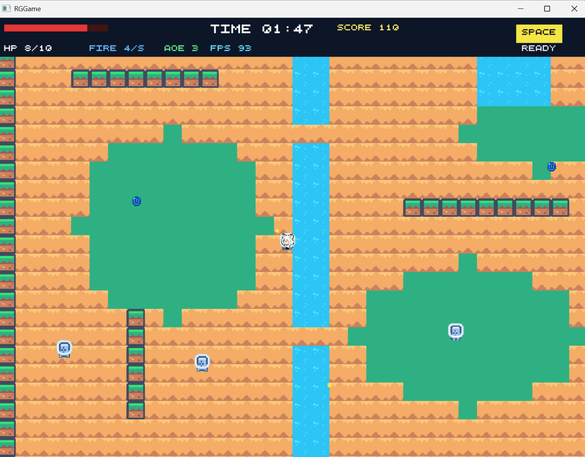

C++17 · Gameplay Systems · Coursework Prototype
WM908 Survival ShooterWM908 生存射击原型
A C++17 survival game with fixed and infinite map modes, mouse-aimed attacks, enemy spawning, pickups, scoring, cooldown skills, and save/load state. The prepared source-and-evidence archive includes gameplay code, level and balance data, and screenshots; runtime art and audio assets remain outside the public archive.一项 C++17 生存游戏项目，包含固定与无限地图、鼠标瞄准攻击、敌人生成、拾取物、得分、冷却技能和存档/读档。已整理的源码与证据档案包含玩法代码、关卡与平衡数据及截图；运行时美术和音频资源不在公开档案中。
Public archive prepared for release公开档案已整理，待发布